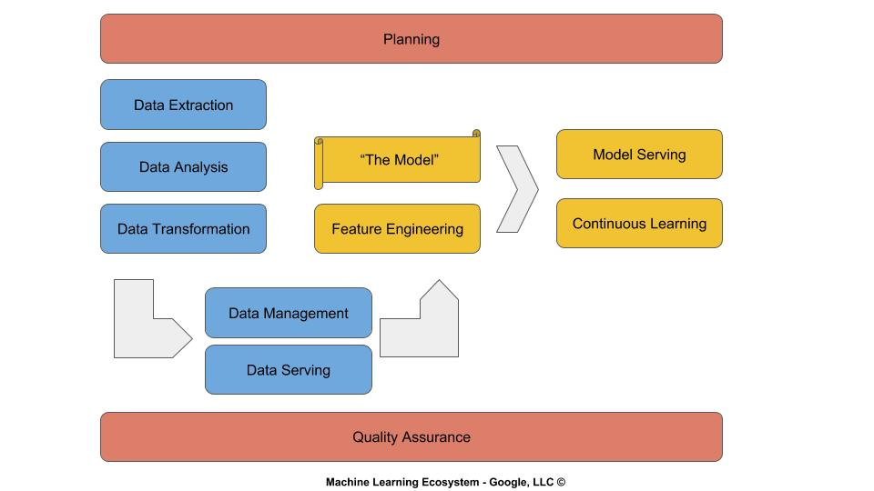

Gap CV
Intro
Gap is a data engineering framework for machine learning. The GapCV is a component of Gap for computer vision (CV). The component manages data preparation of images, feeding and serving neural network models, and data management of persistent storage.
The module is written in a modern object oriented programming (OOP) abstraction with an imperative programming style that fits seamlessly into ML frameworks which are moving into imperative programming, such as Keras and PyTorch. The bottom layers of the module are written in a bare metal style for high performance.
Gap was inspired by a meeting of data scientists and machine learning enthusiasts in Portland, OR in May 2018. The first version of Gap was available during the summer and the local software community was engaged through meetups, chats, Kaggle groups, and a conference at the Oxford Suites. During the Fall, a decision was made to refactor Gap into an industrial grade application, spearheaded by Gap's lead, David Molina, and overseen and assisted by Andrew Ferlitsch, Google AI.
Why and Why Now
During the Spring of 2018, many of us had observed advancements in redesign of ML frameworks (such as Keras and PyTorch) to migrate into frameworks which would have broader adoption in the software engineering community. But, the focus was primarily on the model building and not on the data engineering. Across the Internet, between blogs, tutorials and online classes, the examples for data engineering was still a wild west. To us, we saw this as a gap, and hence the name Gap.
ML practitioners today recognize the substantial component that data engineering is within the machine learning ecosystem, and the need to modernize, streamline and standardize to meet the needs of the software development community at the same pace as framework advancements are being made on the modeling components.

Summary of Features
Image Types
The following image formats are supported:
* JPEG and JPEG2000
* PNG
* TIF
* GIF
* BMP
* 8 and 16 bits per pixel
* Grayscale (single channel), RGB (three channels) and RGBA (four channels)
Image Set (Dataset) Layouts
The following image dataset layouts are supported (i.e., can be ingested by Gap):
* On-Disk (directory, CSV and JSON)
* In-Memory (list, numpy)
* Remote (http)
For CSV and JSON, the image data can be embedded (in-memory), local (on-disk) or URL paths (remote).
Image Transformations
The following image transformations are supported:
* Color -> Gray
* Resizing
* Flattening
* Normalization and Standardization
* Data Type Conversion: 8 and 16 bpp integer and 16, 32 and 64 bpp float
Transformations can be performed when processing an image dataset (ingestion) or performed dynamically in-place when feeding (training) a neural network.
Image Augmentation
The following image augmentations are supported:
* Rotation
* Horizontal and Vertical Flip
* Zoom
* Brightening
* Sharpening
Image augmentation can be performed dynamically in-place during feeding (training) of a neural network.
Image Feeding
The following image feeding mechanisms are supported:
* Splitting
* Shuffling
* Iterative
* Generative
* Mini-batch
* Stratification
* One-Hot Label Encoding
When feeding, shuffling is handled using indirect indexing, maintaining the location of data in the heap. One-hot encoding of labels is performed dynamically when the feeder is instantiated.
In-Memory Management
The following are supported for in-memory management:
* Contiguous Memory (Numpy)
* Streaming
* Indirect Indexing (Shuffling w/o moving memory)
* Data Type Reduction
* Collection Merging
* Asynchronous and Concurrent Processing
Collections of image data, which are otherwise disjoint, can be merged efficiently and with label one-hot encoding performed dynamically for feeding neural networks from otherwise disparate sources.
Persistent Storage Management
The following are supported for on-disk management:
* HDF5 Storage and Indexing
* Metadata handling
* Distributed
Installation
Pip Installation:
The GapCV framework is supported on Windows, MacOS, and Linux. It has been packaged for distribution via PyPi.
-
Install miniconda.
-
Install conda virtual environment and required packages:
- Create an environment with:
conda create -n gap python==3.5 jupyter pip - Activate:
source activate gap pip install gapcv
- Create an environment with:
-
Exiting conda virtual environment:
- Windows:
deactivate - Linux/macOS:
source deactivate
- Windows:
Setup.py Installation:
To install GapCV via setup.py:
-
Clone from the Github repo.
git clone https://github.com/gapml/CV.git
-
Install using the GapCV setup file.
- access folder
cd CV python setup.py install
- access folder
Importing GapCV
To import GapCV into your python application, do:
from gapcv.vision import Images
Quick Start
Image preparation, neural network feeding and management of image datasets is handled through the class object Images. We will provide here a brief discussion on the
various ways of using the Images class.
The initializer has no required (positional) parameters. All the parameters are optional (keyword) parameters. The most frequently used parameters are:
Images( name, dataset, labels, config )
name : the name of the dataset (e.g., 'cats_n_dogs')
dataset: the dataset of images
labels : the labels
config : configuration settings
Preparing Datasets
The first step is to transform the images in an image dataset into machine learning ready data. How the images are transformed is dependent on the image source and the configuration settings. By default, all images are transformed to:
1. RGB image format
2. Resized to (128, 128)
3. Float32 pixel data type
4. Normalization
In this quick start section, we will briefly cover preparing datasets that are on-disk, remotely stored and in-memory.
Directory
A common format for image datasets is to stored them on disk in a directory layout. The layout consists of a root (parent) directory and one or more subdirectories. Each subdirectory is a class (label), such as cats. Within the subdirectory are one or more images which belong to that class. Below is an example:
cats_n_dogs
/ \
cats dogs
/ \
c1.jpg ... d1.jpg ...
The following instantiation of the Images class object will load the images from local disk into in-memory according to the default transformation settings. Within memory, the set of transformed images will be grouped into two classes: cats, and dogs.
images = Images(dataset='cats_n_dogs')
Once loaded, you can get information on the transformed data as properties of the Images class. Below are a few frequently used properties.
print(images.name) # will output the name of the dataset: cats_and_dogs
print(images.count) # will output the total number of images in both cats and dogs
print(images.classes) # will output the class to label mapping: { 'cats': 0, 'dogs': 1 }
print(images.images[0]) # will output the numpy arrays for each transformed image in the class with label 0 (cats).
print(images.labels[0]) # will output the label for each transformed image in the class with label 0 (cats).
Several of the builtin functions have been overridden for the Images class. Below are a few frequently used overridden builtin functions:
print(len(images)) # same as images.count
print(images[0]) # same as images.images[0]
List
Alternatively, local on-disk images may be specified as a list of paths, with corresponding list of labels. Below is an example where the dataset parameter is specified as a list of
paths to images, and the labels parameter is a list of corresponding labels.
images = Images(name='cats_and_dogs', dataset=['cats/1.jpg', 'cats/2.jpg', ... 'dogs/1.jpg'], labels=[0, 0, ... 1])
Alternately, the image paths may be specified as remote locations using URL paths. In this case, a HTTP request will be made to fetch the contents of the image from the remote site.
images = Images(name='cats_and_dogs', dataset=['http://mysite.com/cats/1.jpg', 'http://mysite.com/cats/2.jpg', ... ], labels=[0, 0, ...])
Memory
If the dataset is already in memory, for example a curated dataset that is part of a framework (e.g., CIFAR-10 in Keras), the in-memory multi-dimensional numpy arrays for the curated images and labels are passed as the values to the dataset and labels parameter.
from keras.datasets import cifar10
(x_train, y_train), (x_test, y_test) = cifar10.load_data()
train = Images('cifar10', dataset=x_train, labels=y_train)
test = Images('cifar10', dataset=x_test, labels=y_test)
CSV
A dataset can be specified as a CSV (comma separated values) file. Both US (comma) and EU (semi-colon) standard for separators are supported. Each row in the CSV file corresponds to an image and corresponding label. The image may be local on-disk, remote or embedded. Below are some example CSV layouts:
*local on-disk*
label,image
'cat','cats/c1.jpg'
'dog','dogs/d1.jpg'
...
*remote*
label,image
'cat','http://mysite.com/c1.jpg'
'dog','http://mysite.com/d1.jpg'
...
*embedded pixel data*
label,name
'cat','[ embedded pixel data ]'
'dog','[ embedded pixel data ]'
For CSV, the config parameter is specified when instantiating the Images class object, to set the settings for:
header # if present, CSV file has a header; otherwise it does not.
image_col # the column index (starting at 0) of the image field.
label_col # the column index (starting at 0) of the label field.
images = Images(dataset='cats_n_dogs.csv', config=['header', 'image_col=0', 'label_col=1'])
For EU style (semi-colon) use the sep setting to specify the separator is a semi-colon:
images = Images(dataset='cats_n_dogs.csv', config=['header', 'image_col=0', 'label_col=1', 'sep=;'])
JSON
A dataset can be specified as a JSON (Javascript Object Notation) file, where the file is laid out as an array of objects. Each object corresponds to an image and corresponding label. The image may be local on-disk, remote or embedded. Below are some example JSON layouts:
*local on-disk*
[
{'label': 'cat', 'image': 'cats/c1.jpg'},
{'label': 'dog', 'image': 'dogs/d1.jpg'},
...
]
*remote*
[
{'label': 'cat', 'image': 'http://mysite.com/c1.jpg'},
{'label': 'dog', 'image': 'http://mystire.com/d1.jpg'},
...
]
*embedded pixel data*
[
{'label': 'cat', 'image': [ embedded pixel data ]},
{'label': 'dog', 'image': [ embedded pixel data ]},
...
]
For JSON, the config parameter is specified when instantiating the Images class object, to set the settings for:
image_key # the key name of the image field.
label_key # the key name of the label field.
images = Images(dataset='cats_n_dogs.json', config=['image_key=image', 'label_key=label'])
Transformations
The default settings of the image transformations can be overridden as settings to the config parameter:
gray : process as 2D (single channel) gray scale images
flatten : process as flatten 1D images (for DNN)
resize=(h,w) : resize to a specific height x weight (e.g., (28,28))
norm=pos|neg|std: normalize between 0 and 1 (pos), normalize between -1 and 1 (neg), or standardize.
float16|float32 : pixel data type
uint8|uint16 : pixel data type
For example, if the target neural network is a DNN and the input is a flattened gray scale 28x28 vector (e.g., mnist), one would specify:
images = Images(name='mnist', ..., config=[resize=(28,28), 'gray', 'flatten'])
If the pixel data is to be standardized instead of normalized, one would specify:
images = Images(..., config=['norm=std'])
If your hardware supports half precision floats (16-bit float) and your neural network is designed to not be effected by a vanishing gradient, you can reduce the in-memory size of the
the transformed image data by 50% by setting the pixel data type to float16.
images = Images(..., config=['float16'])
In another example, you can do a space vs. speed tradeoff. The pixel data type can be set to uint8 (8-bit integer). In this case, pixel normalization is deferred and performed dynamically
each time the image is feed to the neural network. The in-memory size of the image data will be 75% smaller than the corresponding float32 version, or 50% smaller than the corresponding
float16 version.
images = Images(..., config=['uint8'])
Feeding Datasets
The Images class provides severals setter/getter properties for feeding a neural network during training. By default, the transformed (machine learning ready) image data is split into
80% training and 20% test. Prior to splitting, the image data is randomly shuffled. Alternately, one can specify a different percentage for test and a seed for the random shuffle with the
split property used as a setter.
# some instantiation of an image dataset
images = Images(...)
# set 10% as test and shuffle with random seed set to 112
images.split = 0.1, 112
Pre-split Dataset
The split property when used as a getter will return a pre-split dataset (train and test) of images and corresponding labels (in a fashion familiar to sci-learn train_test_split()).
The training data will have been randomly shuffled prior to the split. The image portion (X_train and X_test) is a multi-dimensional numpy array, and the label portion (Y_train and Y_test)
is a numpy matrix which has been one-hot encoded.
X_train, X_test, Y_train, Y_test = images.split
print(X_train.shape) # would output something like (10000, 128, 128, 3)
print(Y_train.shape) # would output something like (10000, 10)
If the pixel data type is uint8 (or uint16), the pixel data will be normalized prior to returning the training and test data.
Iterative
The next() operator is overridden to act as a iterator for feeding a neural network. Each invocation of next() will return the next image and label in the training set. Once all
the image data has been enumerated (i.e., epoch), thenext() operator will return None and randomly reshuffle the training data for the next epoch. The image and label data are returned
as a multi-dimensional numpy array and one-hot encoded numpy vector, respectively.
for _ in range(epochs):
# pass thru all the training data for an epoch
while True:
image, label = next(images)
if not images:
break
If the pixel data type is uint8 (or uint16), the pixel data will be normalized dynamically per invocation of the next() operator.
Mini-batch (Generative)
The minibatch property when used as a setter will set the mini-batch size for creating a generator for feeding the neural network in mini-batches. By default, the mini-batch size is 32.
# set the mini-batch size to 64
images.minibatch = 64
The minibatch property when used as a getter creates a generator on each invocation. The generator will return a sequence of images and labels, whose size is specified as the parameter
(or default) to minibatch when specified as a setter. Each creation of the generator will sequentially move through the training data. When the end of the training data is reached, the
training data is randomly reshuffled and the minibatch getter is reset to start at the beginning of the training data. The image and label data are returned
as a multi-dimensional numpy array and one-hot encoded numpy vector, respectively.
# feed in steps number of mini-batches
for _ in range(steps):
# create the generator
g = images.minibatch
If the pixel data type is uint8 (or uint16), the pixel data will be normalized dynamically per creation of a mini-batch generator.
Stratified mini-batch
The stratified property when used as a setter will set the mini-batch size for creating a generator for feeding the neural network in stratified mini-batches. By default, the mini-batch size is 32. A min-batch is stratified when their is a even distribution of classes within the batch.
# set the stratified mini-batch size to 64
images.stratify = 64
The stratify property when used as a getter creates a generator on each invocation. The generator will return a sequence of images and labels, whose size is specified as the parameter
(or default) to stratify when specified as a setter. Each creation of the generator will sequentially move through the training data. When the end of the training data is reached, the
training data is randomly reshuffled and the 'stratify` getter is reset to start at the beginning of the training data. The image and label data are returned
as a multi-dimensional numpy array and one-hot encoded numpy vector, respectively.
# feed in steps number of stratified mini-batches
for _ in range(steps):
# create the generator
g = images.stratify
If the pixel data type is uint8 (or uint16), the pixel data will be normalized dynamically per creation of a stratified mini-batch generator.
Image Augmentation
Image augmentation (synthesis of new images) occurs dynamically in-place when feeding a neural network, and is initiated through the parameter augment when instantiating an
Images class object. The settings for the augment parameter are:
rotate=min,max : random rotation of image within range min and max.
zoom=factor : zoom factor of n (i.e., 1.5 = 150%).
flip=horizontal|vertical|both : flip image on horizontal, vertical or both axes.
brightness=factor : brighten image by factor
contrast=factor : contrast image by factor
edge : sharpen the image
denoise : apply de-noising filter
Below is an example of specifying image augmentation during feeding of a neural network:
images = Images(..., augment=['rotate=-90,90', 'flip=vertical'])
Image augmentation occurs dynamically during feeding. For each image feed, a second augmented image will follow. For example, if the training set is 1000 images, the next() operator will feed 2000 images per epoch. If the mini-batch or stratify size is set to 32, the corresponding generators will feed 64 images. If multiple image augmentation settings are specified, a random selection is made of the type of augmentation per image. For example, if one specifies rotation, zoom and horizontal flip, then each time an image is augmented a random choice is made between the three.
Managing Datasets (Persistent Storage)
Image datasets which have been transformed into machine learning ready data can be stored and managed in persistent storage, using the HDF5 filesystem format. The following can be done:
1. Save transformed images into storage (bulk or streamed).
2. Load transformed images from storage (bulk or streamed).
3. Apply new transformations (e.g., convert to gray scale, flatten, change size, etc).
4. Combine collections (classes) of images.
Save to Persistent Storage
A transformed image dataset (i.e., collection) can be saved to, and subsequently retrieved from, persistent storage with the config setting store. When specified, the transformed
(machine learning ready data) image dataset, along with associated metadata, is stored to HDF5 storage. Within the HDF5 storage, each class (label) of data is compacted and indexed into a contiguous volume within the HDF5 storage for subsequent fast retrieval.
# store the transformed image dataset into HDF5 storage
images = Images(..., config=['store'])
If the image dataset is too large to hold the entire dataset in memory, the images can alternatively be processed one at a time and streamed into the HDF5 storage. In this mode, the
process only consumes memory resources for a single image. The stream mode is invoked when the config setting stream is specified.
# stream (store) the transformed image dataset into HDF5 storage
images = Images(..., config=['stream'])
Load from Persistent Storage
The load() method of the Images class will retrieve (load) a collection of transformed (machine learning ready data) images, and associated metadata, from persistent storage. Once loaded, the collection can then be feed to a neural network for training.
# load a previously preprocessed collection of images
images = Images()
images.load('cats_n_dogs')
# load into a neural network
images.split = 0.1, 112
X_train, X_test, Y_train, Y_test = images.split
Apply Transforms
After a transformed image dataset has been loaded from persistent storage, one can further re-transform the dataset to match the input requirements of another neural network, without reprocessing the original image data. The re-transforms are supported as setter properties of the Images class:
- `gray` : Converting to Grayscale
- 'flatten`: Flattening
- 'resize` : Resizing
# load a previously preprocessed collection of images
images.load('cats_n_dogs')
# resize the transformed images to 96 x 96 (height vs. width)
images.resize = (96, 96)
Combining Collections
Existing collections in persistent storage can be combined into a single new collection using the overridden += operator. When combined, the label assignment is reassigned. For example,
if both collections are a single class with both having the respective value 0 for the class, in the combined version, one class will be 0 and the other 1.
cats = Images(name='cats', dataset=..., ...)
print(cats.class) # will output: {'cats': 0}
dogs = Images(name='dogs', dataset=..., ...)
print(dogs.class) # will output: {'dogs': 0}
cats += dogs
print(cats.class) # will output: {'cats': 0, 'dogs': 1}
Reference
Testing
The Gap framework is developed using Test Driven Development methodology. The automated unit tests for the framework use pytest, which is a xUnit style form of testing (e.g., jUnit, nUnit, jsUnit, etc).
Installation and Documentation
The pytest application can be installed using pip:
pip install pytest
Online documentation for pytest
Execution
The following are the pre-built automated unit tests, which are located under the subdirectory tests:
image_test.py # Tests the Image and Images Class in the Vision Module
The automated tests are executed as follows:
-
From directory root enter
cd tests -
Tests can be run by:
pytest -v image_test.py
Code Coverage
Information on the percent of code that is covered (and what source lines not covered) by the automated tests is obtained using pytest-cov. This version of pytest is installed using pip:
pip install pytest-cov
-
From directory root enter
cd tests -
To run tests with coverage:
pytest --cov=gapcv.vision image_test.py
Statements=1363, Missed=67, Percent Covered: 95%